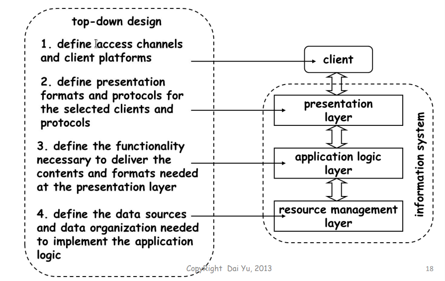

分布式组件导论
课程介绍
web服务是中间件的自然演化和企业平台整合的结果，他们想把www,英特网和社会全球化整合为一体，尤其在经济层面。
我们本次课程要回答的问题是：什么是web服务，web服务如今能做什么
课程目标：
- 理解web服务
- 为了能理解web服务，我们需要后退一步去看看分布式信息系统在过去十几年中变化的历史。
- 把web服务应用化
- 我们将回顾如今基本的web服务技术，并且详细讨论SOAP,UDDI,WSDL,SOA,BPEL
- 我们也将探讨这些规格如今可以做什么，他们缺失了什么导致他们不能成为有效的工具投入商用
- 课程目的旨在培养一种对当今web service技术和可能性的批判思维。
3 Aspects – Performance in the Course (20 points)
• A team with 5-7 persons to prepare a report with PPT to show a
case in any domain with SOA. Gives the reason why use SOA,
gives the architecture of the project, gives the services to be
invoked. – Final Examination(50 points)
• Test the extent to which you understand what have been taught – Assignment (choose any one in the following)
• A Report for this Course (30 points), At the end of the course,
submit a report about what is your view on web service, e.g., its
benefit to EAI, the problem when use it to build a information
system, and other problems you would like to discuss in your
report. Any aspects of the web service is OK.
• Experiment(30 points). At the end of the course, submit a
experimental report about how to invoke a web service, how to
deploy a web service on the web and how to compose multiple
web services together.
基本概念
表示逻辑层(Presentation)：用户通过表示层，操作系统
应用逻辑层(Application Logic)：处理系统逻辑
资源管理器(Resource Manager)：提供永久存储

每一层都可以拆分成多个模块，模块增加带来的结果：
- 分布式和并行的机会提升;对封装，组件设计，复用的需求提升
- 更多的箭头，需要维护更多的链接，需要更多的坐标，系统的监控和维护变得更加复杂
- 获取数据需要更多上下文的交换和更多中间步骤，性能的削减很可观
- 系统设计师试图平衡模块设计的灵活性实际应用的性能要求。一旦一层建立后，它倾向于向下迁移并与较低层合并
自上而下的设计(Top Down)
系统的功能被分成几个模块，模块不能作为独立的组件，他们的功能需要其他模块的功能

自下而上的设计(Bottom Up)
- 自下而上的设计中，很多基础的组件已经存在，这些是需要倍集成进新系统的独立系统
- 这些老的组件不需要停机，当新组件产生时老的组件继续运行
- 这种方法用途广泛因为底层的系统已经存在并且不能被轻易取代
- 大部分这种情况下的工作和产品都和中间件相关—一种用来提供公共接口，桥异质性和应对分布的中间层
一层：完全中心化
- 表示层，逻辑层，资源管理起被做成一个单片的实体
- 用户程序通过显示器命令行接入系统，但是如何显示显示什么由服务器决定
- 这是一种典型的主机架构，有如下的优点
- 在控制流中没有强制的山下文切换
- 一切都是中心化的，管理和控制资源非常容易
- 这种设计可以通过模糊隔层之间的隔离来获得极高的优化
两层：客户端/服务器（C/S）
因为计算机变得更加强大，所有得意吧表示层移到客户端，这样做的优点：
- 客户端之间相互独立，一个客户端可以有不同的表示层，取决于每个客户端要做什么
- 客户端分担了计算力，且可以带来多个表示层。同时也节省了客户端的资源
- 这引入了API的概念，一个从外部调用系统的接口，这让设计者们想到可以把多个系统统一为一个整体
- 资源管理器只看得见一个客户：应用逻辑层，因为没有必要维护客户链接，性能得以很大提升。
从一层架构到两层架构的转变带来了明显的技术优势：
- 利用了客户端的容优势量，把工作交给客户端做
- 服务器设计依然是紧耦合的，并却可以通过无视表示层的问题来优化
- 从软件工程的角度上来说依然比较容易管理和控制
然而，两层系统也有缺点：
- 服务器必须处理所有可能的客户端连接，最大的客户端数目取决于服务器支持的连接数量
- 因为没有一个标准的表示层，客户端被绑在了服务器上，一个人要使用两个系统，客户端就需要两个表示层
- 没有错误和夹在封装，一旦服务器崩溃，所有人都不能使用。类似的，一个客户端创造的计算负载会被直接影响他人，因为他们都在竞争用一个资源
C/S的局限性：如果客户端需要接入多个服务器，2层结构可能带来的问题：
- 处理异质系统的责任变成了客户端的
- 没有共同的业务逻辑
- 底层系统互不知晓
- 客户端需要知道东西在那，如何得到他们，如何确保完整性
三层：中间件(MiddleWare)
三层结构中，三层完全分开了。中间件是客户端和其他层之间的一个间接层。他引入了一个额外的包含了所有底层系统的业务逻辑层。
一个中间件通过这样：
- 通过减少接口数量减少了客户端的复杂度
- 提供了访问底层系统不同的方法
- 成为了内部系统功能和高级应用的平台，且保护本地数据，访问他们，和搜集结果
中间件的引入带来了如下的好处：
- 大规模减少了所需接口的数量，客户端只能看到中间件，本地系统也只能看到中间件
- 他让控制中心化了
- 他让所有的客户都能访问到必须的功能
- 然一些原本很难实现的功能得以实现
中间件本身就是一个系统！他也可以分一层,两层,三层….
组件
组件就是包含了特定接口的一个单位，组件的大小各不相同，上到一个学生注册系统，下到一个按钮，都是组件
组件的特点：
- 规格—描述做什么，如何使用这个组件，如何调用它，如何交互
- 实现—关于如何做，如何实现
组件的优点：
- 效率高
- 使得不同应用之间可以交互
- 易于维护
web服务
web服务是一个提供服务的可编程的组件，可以通过互联网访问
样例学习
面向服务的编程：软件不需要被提前安装(web)，服务按需启动，不同设备互联，即插即用，不需要用户安装设备驱动程序。
web服务导论
作为服务的软件
作为代码的软件：开发 -> 测试 -> 发布 -> 安装 -> 操作
作为服务的软件：开发 -> 测试 -> 操作(通过互联网服务) 用户的操作可以增强服务
SOC & SOA概述
IT的本质
IT:Information Technolog 信息技术
在IT的本质中有两种使用信息的方法：
- 创造信息
- 访问信息
创造信息
- 在商业活动中，比如：接受订购，购买材料，大量的信息被生成
- 需要把这些信息收集到一起。比如，当收到一个订购信息需要记录顾客的信息，产品的信息，以此来运输和支付
调用信息
- 根据上面的例子，在收到订购之后，在运输前，产品会被找到并包装。之后，在运输的过程中，需要根据订购的信息找到客户的地址信息。
- 找到客户的地址信息的功能就是一个调用
IT的改良：整合信息
- 整合信息是为了更好的利用信息
- 比如，对收到的订购信息和销售信息的整合，可以被用来给企业制定生产计划。
紧耦合
- 数据和功能通常被放置在不止一个系统上
- 应用之间需要能够“相互交谈”
- 现状：专用或定制应用间通讯用的接口
紧耦合面临的挑战
- 紧耦合面临的挑战
- 维护起来代价很大
- 缓慢并且改变的代价很大
- 结果：花费巨大，维护复杂，改变一个紧耦合的系统让商业事务难以灵活
- 不支持复用：复用是一个业界多年都想解决的问题
- 复用的解决方案的变化过程反映了整个产业的焦点：
- 头文件，对象层的继承和多态，框架
- CORBA(Common Object Request Broker Architecture)
- Microsoft COM(Component Object Model)
- EAI(Enterprise Application Integration )
- Web Services
以应用为中心 VS 以服务为中心（ppt 14 16）
面向服务架构(SOA)
Service Oriented Architecture(SOA)
SOA是一个软件架构模型
- 在模型中，软件是基于标准协议的服务
- 代表一种高级不商务概念
- 可以被重用创造新的商务应用
- 可以通过网络分布式
- SOA内部使用的通信基础设施应设计为独立于底层协议层
SOA是有关构建松耦合的，可重用的与应用程序无关的业务服务的准则。
服务是自主，离散和可重复使用的业务功能单元,以合同形式披露其能力。即使在运行时，服务也可以独立进化，移动，扩展
SOA是一组相互通信的服务。通信包括服务提供者和消费者之间简单数据传送。
注意！
- SOA是一个设计理念和架构，而不是一种技术和方法
- SOA是一个解决方案，而不是一个具体产品
- SOA通过web服务和相关的技术获得，而不只是web服务
主要的服务类型
- 基础服务
- 以数据为中心和以逻辑为中心的服务
- 封装数据行为和数据模型并确保数据一致性。
- 基本服务是无状态的，有着高度的可重用性
- 复合服务
- 封装特定于业务的工作流程或精心策划的服务。
SOA关键技术
SOA的准则：
- 自描述
- SOA服务接口描述，暴露，并提供一个“切入点”服务。界面包含所有服务消费者需要的信息发现并连接到服务，没有要求消费者理解（甚至看到）技术实施细节。
- 松耦合(调用者和服务端不需要紧耦合)
- 松散耦合允许将应用程序功能的关注点分离成独立的部分。这种“分散的关注”提供一种不需要紧绑定就能来调用另一种服务的机制。
- 在服务边界内外创建特定类型的关系一直强调减少（“松散”）之间的依赖关系
- 服务合同
- 服务实施
- 服务消费者
- 抽象(只传送另一方必要的信息)
- 服务归约只包含基本的信息和的服务规约中发布的信息
- 避免以不必要的服务信息，元信息作为开端
- 尽可能隐藏服务的底层细节
- 可重用
- “服务包含和表达不可知的逻辑，可以定位为可重用的企业资源。”
- 可重复使用的服务有以下特征：
- 由不可知的功能上下文定义
- 逻辑高度通用
- 具有通用和可扩展的合同
- 可以并发访问
- 自主
- “服务对它们的底层运行时执行环境控制力很高。”
- 表示服务逻辑独立于外部影响执行服务的能力
- 要实现这一目标，服务必须更加孤立
- 主要益处：提高可靠性，行为可预测性
- 无状态
- SOA服务不会记住上次次他们干了什么，也不会在意下一次是什么。服务不取决于其他服务的上下文。
- 在服务设计中合并州管理延期扩展
- 目标
- 提高服务可扩展性
- 支持不可知的设计逻辑和改善服务重用
- 可被发现性
- 服务必须是可发现的，不然他们不可能被调用
- 服务合同包含用于发现的适当元数据，其还向人类传达目的和能力
- 将元数据存储在服务注册表或配置文件中
- 可组合性
- SOA服务本质上是复合的。它们可以由其他服务组成 - 反过来，可以与其他服务组合以组成新的业务解决方案。组合通常通过编排来实现，使用实现诸如BPEL4WS之类的标准的工具
- 确保服务能够参与多个组合以解决多个更大的问题
- 与可重用性原则相关
- 服务执行应该高效，因为应该高度调整单个处理
- 灵活的服务合同，允许对类似功能的不同类型的数据交换要求
实现SOA的步骤：
- 创建/公开服务
- 注册服务
- 安全服务
- 管理（监控）服务
- 调解和虚拟化服务
- 管理SOA
SOA的好处:
- 提供位置独立性：服务无需与特定网络上的特定系统相关联
- 独立于协议的通信框架使代码可重用
- 为不断变化的业务需求提供更好的适应性和更快的响应速度
- 允许更轻松的应用程序开发，运行时部署和更好的服务管理
- 松散耦合的系统架构允许通过组合应用程序，流程或来自其他不太复杂的服务的更复杂服务轻松集成
- 通过服务接口而不是紧密耦合的机制提供服务使用者的身份验证和授权，以及所有安全功能
- 允许服务使用者（例如Web服务）动态查找和连接可用服务
web服务模型
Web服务栈：
服务和信息层(Service & Information Layer)
使用WSDL：
- 描述服务可以支持的消息交换格式
- WSDL可以定义服务可用的位置以及用于与服务通信的通信协议。
- 作为扩展IDL：WSDL允许工具生成兼容的客户端和服务器存根。
- 允许行业定义标准化服务接口。
- 允许广告服务描述，启用动态发现和兼容服务的绑定。
- 提供异构应用程序的规范化描述。
WSDL文档（PPT64）
XML语言
在web服务中，一个信息是一个XML文当中定义的一个item,所有web服务的技术都基于XML来通信，描述，注册。因为XML是文本文档，没有二进制数据，应用可以直接读XML，所有应用都用XML，所以应用之间可以相互通信。使用XML的应用可以平台无关，XML可以吧结构化的数据存入文本文件
打包层(Packaging Layer)
- Simple Object Access Protocol (SOAP)是一个轻量级的协议，被设计来使用XML交换信息
- 定义模块化包装模型和编码的编码机制模块内的数据
协议层(Protocol Layer)
- 任何标准的网络协议都可能被用来通过网络调用网络服务
- 初始定义专注于HTTP / 1.1和加密的HTTPS
- FTP和SMTP协议也可能被使用
发现层(Discovery Layer)
- 通用描述，发现和集成协议（UDDI）指定用于查询和更新Web服务信息的公共目录的协议。- 可以使用UDDI目录方法当Web服务信息存储在众所周知的位置。
- UDDI提供查询和发布API
- Microsoft，IBM和SAP托管UDDI业务注册。
- 目录条目有三个主要部分 - 服务提供者，提供的Web服务和绑定到实现。
- 动态发现的Web服务明确宣布其到达和离开网络。
Web服务优点和缺点
优点：
- Web服务提供互操作性运行各种软件应用程序之间在不同的平台/操作系统上
- Web服务使用开放标准和协议
- 通过利用HTTP，Web服务可以通过许多常见的防火墙安全工作，而无需改变防火墙过滤规则。
- Web服务允许软件和服务来自不同的公司和地点，结合轻松提供一体化服务。
- Web服务允许重用服务和基础设施内的组件。
- Web服务由此松散耦合促进分布式
缺点：
- 管理和跟踪变化是一个挑战
- 事务不完全解决
- 多种不断发展的安全性标准
- 处理开销
未来的愿景和挑战
未来愿景：
- 技术供应商计划开发，营销和销售借助在线Web服务来实现几乎任何业务功能。
- 公司将能够简单地搜索应用程序的公共目录并下载符合其需求的应用程序。
挑战：
- 供应商如何提供端到端安全性？
- 当供应商未能交付时，谁负责承诺的服务？
- 供应商如何保证可用性和可靠性？
- 供应商如何处理定价？
XML基础
XML简介
XML：eXtensible Markup Language（可扩展的标记语言）
- XML是一种含有结构化信息的标记预言
- XML是一种元标记(meta-markup)语言
- 标签可以按需要扩展
- XML可以自己描述自己的结构和语法
- XML简单容易理解，而且平台无关，XML只和数据相关但是不用管如何展示，如何显示由其他语言决定，eg.CSS & XSL
- 当XML分发给客户端，客户端可以用软件获取数据并修改，HTML只是被用来显示数据
- 部分工作(解析)由客户端来做，这样降低了服务器的工作负担
XML结构
- 声明：版本包
- 注解
- 主体正文：含有元素DTD可以写为本地定义，也可以写在文件里作为外部定义
<!-- notation -->
<myMessage>
welcome
</myMessage>
DTD:文档类型描述：
```xml
<book>
<price>33</price>
<name>xml Technology</name>
</book>
XML不等同html，标签必须有开始和结束：
html下可以<br>，但xml下必须<br></br>或者<br/>
XML下内容要使用保留的关键字，则需要使用对应的转译符
语法见PPT
web服务标准
SOAP
Simple Object Access Protocol简单对象访问协议
W3C标准下基于XML和HTTP的轻量级的复杂分布式对象技术的替代品
服务构成
intergration 整合
go over重温
homogeneous同质
tie 等级
monolithic 单片的
sophisticated 复杂的
chapter 1 考点：自顶向下 自xxx 的用例范围情况 实用性